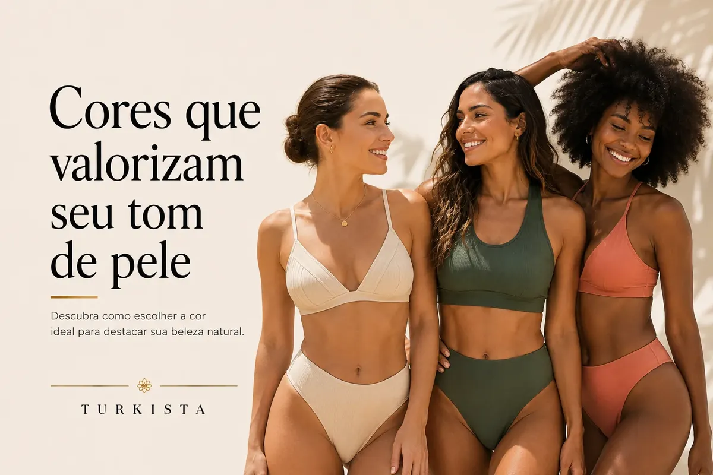

Como escolher o tamanho certo de biquíni ou maiô
Aprenda a usar a tabela de medidas, avaliar o caimento e considerar a elasticidade antes de comprar moda praia online.

Para escolher o tamanho certo de biquíni ou maiô, comece pela tabela de medidas da loja, compare suas medidas com os dados publicados e leia as informações específicas da modelagem. O tamanho que você usa em outras roupas é apenas uma referência: cortes, elasticidade e construção variam de uma peça para outra.
Não invente medidas quando a loja não publica uma tabela. Se as informações necessárias não estiverem disponíveis, pergunte ao atendimento antes de comprar.
Tire suas medidas com atenção
Use uma fita métrica flexível e mantenha-a próxima ao corpo, sem apertar a pele nem deixá-la frouxa. Anote as medidas solicitadas pela tabela da loja. Alguns produtos podem exigir medidas diferentes, por isso siga exatamente as instruções que acompanham a tabela.
Se estiver entre dois tamanhos, não escolha automaticamente o menor ou o maior. Leia as orientações da peça e considere a preferência de caimento, a elasticidade informada e a modelagem. Se ainda houver dúvida, entre em contato com a loja.
Confira a tabela de cada marca
Não existe uma tabela universal que funcione para todas as marcas. Mesmo dentro de uma mesma loja, diferentes modelos podem ter cortes e regulagens distintos. Use a tabela publicada para o produto que deseja comprar, se houver, em vez de se basear apenas em uma compra anterior.
Na Turkista, confira a ficha e os tamanhos indicados em cada página de produto. Nem toda peça terá a mesma grade, e os tamanhos disponíveis podem variar conforme o modelo e o estoque.
Avalie o ajuste da parte de cima
O top deve permanecer confortável e no lugar, sem alças que machuquem ou faixa que suba continuamente. Observe se a copa acomoda o busto conforme a construção do modelo e se as amarrações permitem ajuste suficiente. Se houver bojo, confira se é removível ou fixo quando essa informação estiver descrita.
A presença de bojo, alças ajustáveis ou amarrações não elimina a necessidade de escolher um tamanho adequado. Cada detalhe contribui para o caimento, mas não substitui as medidas e a avaliação individual.
Avalie o ajuste da calcinha e do maiô
Na parte de baixo do biquíni, observe a cintura e as laterais. A peça não deve causar dor ou escorregar constantemente. No maiô, considere também o comprimento do tronco e a posição das alças, porque uma peça pode ter largura adequada e ainda assim não oferecer o ajuste esperado em comprimento.
Se for possível experimentar, movimente-se com cuidado e veja se a peça permanece confortável ao sentar, caminhar e levantar os braços. Não force costuras ou amarrações para compensar um tamanho inadequado.
Elasticidade não significa tamanho único
Um tecido elástico pode acompanhar movimentos, mas isso não quer dizer que qualquer tamanho sirva para qualquer pessoa. A composição e a construção influenciam o ajuste, assim como o corte e a forma de costura. Não escolha um tamanho menor presumindo que o tecido sempre vai ceder de forma confortável.
Confira as informações de composição quando disponíveis e siga as instruções do fabricante. Se o anúncio não informar a elasticidade, não tente deduzi-la apenas pela foto.
Leia a descrição antes de finalizar a compra
Confira se o produto é um conjunto, um top avulso ou uma parte de baixo vendida separadamente. Observe os tamanhos listados, as fotos, a composição quando publicada e as políticas da loja sobre trocas. Se a tabela não estiver disponível, peça orientação antes de concluir o pedido.
Uma compra mais segura é aquela em que você entende o que está comprando e quais informações ainda precisam ser confirmadas.
Perguntas frequentes
Devo comprar o mesmo tamanho que uso em roupas comuns?
Use esse tamanho apenas como referência. Compare suas medidas com a tabela específica do produto, quando disponível.
O que fazer se estiver entre dois tamanhos?
Confira as instruções de caimento, a modelagem e a elasticidade informada. Se continuar em dúvida, pergunte à loja antes de comprar.
Como escolher tamanho de maiô?
Considere as medidas publicadas e o comprimento do tronco, além da largura. A modelagem de cada maiô pode mudar o ajuste.
A tabela de medidas é igual para todos os produtos?
Não necessariamente. Consulte a tabela aplicável ao produto e não presuma que a grade seja idêntica entre modelos.
Posso confiar apenas nas fotos?
As fotos ajudam a entender o design, mas não substituem as medidas e as informações de tamanho. Confira a descrição e pergunte se faltar um dado importante.
A melhor escolha combina medidas, descrição e atenção ao caimento. Use os dados disponíveis para o produto específico e tire dúvidas antes de comprar quando faltar informação essencial.
Explore peças relacionadas
Ficou com dúvida sobre uma peça?
Fale com a Turkista pelo WhatsApp para confirmar informações antes de escolher.
Falar no WhatsApp